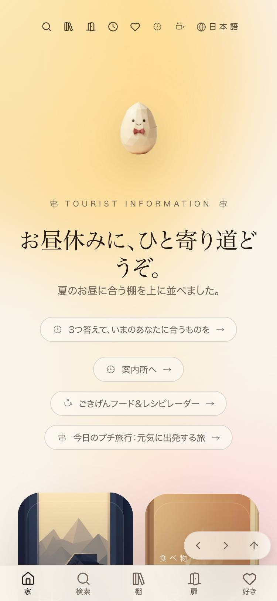
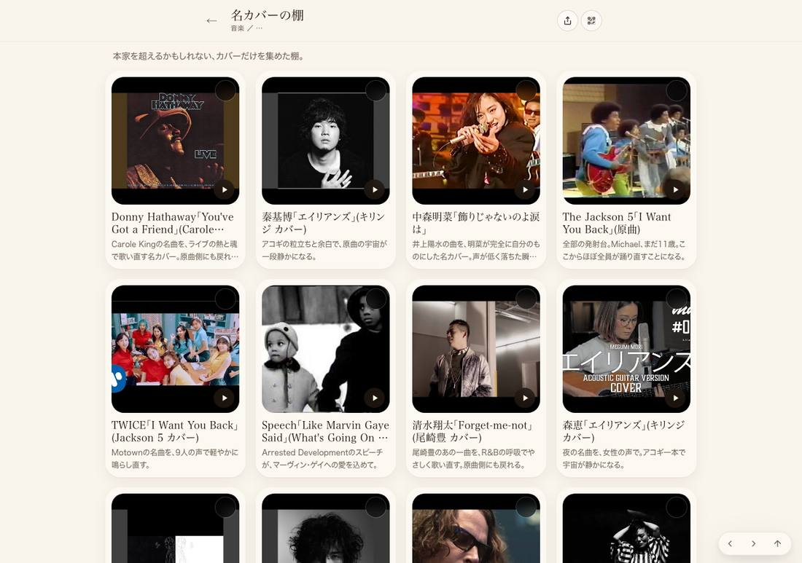
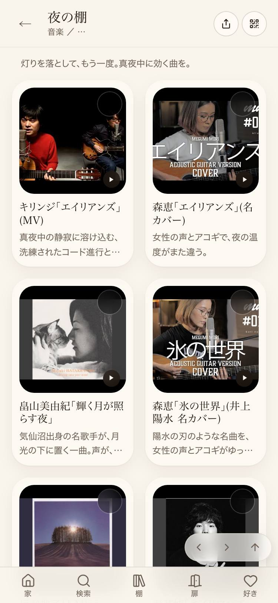

01 / MYSTERY SHOPPER
JOY RELIEF STATION / WHAT THE CUSTOMERS FELT
架空のお客さん4人が、本番のごきげん補給所を実際に触りました。ここに出ているのは全部、ブラウザが自分で測った数字です。人の感想もAIの採点も1つも入っていません。
[
{
"url": "https://joy-relief-station.lovable.app/cover-guide?artist=bon-jovi&song=livin-on-a-prayer",
"error": "測れませんでした: Locator.evaluate: Timeout 15000ms exceeded.\nCall log:\n - waiting for locator(\"body\").first\n - locator resolved to visible <body>…</body>\n"
},
{
"url": "https://joy-relief-station.lovable.app/cover-guide?artist=baka-mukashibanashi&song=momotaro-no-heya",
"error": "測れませんでした: Locator.evaluate: Target crashed \nCall log:\n - waiting for locator(\"body\").first\n"
},
{
"url": "https://joy-relief-station.lovable.app/cover-guide?artist=tatsuro&song=sparkle",
"error": "開けませんでした: Page.goto: Page crashed\nCall log:\n - navigating to \"https://joy-relief-station.lovable.app/cover-guide?artist=tatsuro&song=sparkle\", waiting until \"domcontentl"
},
{
"url": "https://joy-relief-station.lovable.app/shelf/music/covers",
"error": "開けませんでした: Page.goto: Timeout 45000ms exceeded.\nCall log:\n - navigating to \"https://joy-relief-station.lovable.app/shelf/music/covers\", waiting until \"domcontentloaded\"\n"
},
{
"url": "https://joy-relief-station.lovable.app/shelf/food/kattemi-yokatta",
"error": "開けませんでした: Page.goto: Timeout 45000ms exceeded.\nCall log:\n - navigating to \"https://joy-relief-station.lovable.app/shelf/food/kattemi-yokatta\", waiting until \"domcontentl"
},
{
"url": "https://joy-relief-station.lovable.app/cover-guide?artist=bts&song=spring-day",
"error": "測れませんでした: Locator.evaluate: Timeout 15000ms exceeded.\nCall log:\n - waiting for locator(\"body\").first\n"
},
{
"url": "https://joy-relief-station.lovable.app/cover-guide?artist=bon-jovi&song=livin-on-a-prayer",
"error": "測れませんでした: Locator.evaluate: Target crashed \nCall log:\n - waiting for locator(\"body\").first\n"
},
{
"url": "https://joy-relief-station.lovable.app/cover-guide?artist=rascal-flatts&song=my-wish",
"error": "開けませんでした: Page.goto: Page crashed\nCall log:\n - navigating to \"https://joy-relief-station.lovable.app/cover-guide?artist=rascal-flatts&song=my-wish\", waiting until \"domco"
}
]
{
"url": "https://joy-relief-station.lovable.app/",
"lcp_ms": 27312,
"longtasks_over50": 39,
"kb": 1502.1,
"requests": 34
}
{
"url": "https://joy-relief-station.lovable.app/shelf/music/covers",
"lcp_ms": 22516,
"longtasks_over50": 27,
"kb": 1732.5,
"requests": 75
}
{
"url": "https://joy-relief-station.lovable.app/shelf/music/night",
"cls": 0.3672,
"cls_while_reading": 0.0,
"shifts": [
{
"t": 9260,
"v": 0.3672,
"srcs": [
{
"el": "li.relative.min-w-0 「森恵「エイリアンズ」(名カバー) 女性の声とアコギで、夜の温」",
"from": [
160,
80,
216,
324
],
"to": [
0,
0,
0,
0
]
},
{
"el": "li.relative.min-w-0 「秦基博「エイリアンズ」(名カバー) アコギの粒立ちと余白で、」",
"from": [
160,
615,
216,
198
],
"to": [
0,
0,
0,
0
]
}
]
}
]
}[
{
"問": "ドライブで聴くやつ",
"不合格": [
"喋りすぎ（セリフ10行・325文字。1行＋短い一言まで）"
],
"セリフ": "ホワイトハウスでMotownを歌い直す夜。大人の余裕のカバー。\n「ドライブで聴くやつ」に近い、音楽の一本として\n静かにマイクを握った次の瞬間、客席がロック会場に変わる。ロック魂に賞味期限はない。\n「ドライブで聴くやつ」に近い、笑いの一本とし",
"出てきたもの": 29
},
{
"問": "知らない国の音楽が聴きたい",
"不合格": [
"喋りすぎ（セリフ6行・206文字。1行＋短い一言まで）"
],
"セリフ": "インド・タミルの村。巨大な鶏卵に鶏肉を合わせ、伝統のごま油で焼き上げる。\n🧭 知らない旅の世界だけど、気分転換にひとつ\n昔好きだったものも、今気になるものも。\nあなたの“好き”に少しだけ会いに行きますか？\n昔好きだったもの、今気になるものを",
"出てきたもの": 19
},
{
"問": "King Gnu好きなんだけど",
"不合格": [
"空（何も返っていない）"
],
"セリフ": "",
"出てきたもの": 0
},
{
"問": "最近入ったやつある？",
"不合格": [
"喋りすぎ（セリフ6行・196文字。1行＋短い一言まで）"
],
"セリフ": "包む、蒸す、焼く。手元を追うだけで時間を忘れる。\n🧭 知らない食べ物の世界だけど、気分転換にひとつ\n昔好きだったものも、今気になるものも。\nあなたの“好き”に少しだけ会いに行きますか？\n昔好きだったもの、今気になるものを入れてください。 ア",
"出てきたもの": 19
},
{
"問": "雨の日に合うの",
"不合格": [
"喋りすぎ（セリフ3行・109文字。1行＋短い一言まで）"
],
"セリフ": "満員御礼のモンスタートラック、泥水にドボン\n限界まで人を乗せたモンスタートラックが、泥水にゆっくり沈んでいく。流れるBGMはまさかの『マイ・ハート・ウィル・ゴー・オン』。\n🧭 知らない笑いの世界だけど、気分転換にひとつ",
"出てきたもの": 5
},
{
"問": "なんか笑えるやつない？",
"不合格": [
"喋りすぎ（セリフ3行・67文字。1行＋短い一言まで）"
],
"セリフ": "ウサギ、バナナをもぐもぐ\nバナナを食べるだけで、耳までかわいい。咀嚼棚の定番入口。\n🧭 知らないかわいいの世界だけど、気分転換にひとつ",
"出てきたもの": 5
},
{
"問": "ユーミン",
"不合格": [
"喋りすぎ（セリフ8行・184文字。1行＋短い一言まで）"
],
"セリフ": "荒井由実 -翳りゆく部屋(from「日本の恋と、ユーミンと。」)\n「ユーミン」に近い、音楽の一本として\n荒井由実 - 海を見ていた午後(from「日本の恋と、ユーミンと。」)\n「ユーミン」に近い、音楽の一本として\n「ユーミン」に近い、音楽の",
"出てきたもの": 28
},
{
"問": "昭和の歌謡曲",
"不合格": [
"開けない・投げられない"
],
"セリフ": "",
"出てきたもの": null
}
]| 症状 | 数字 | どこで | 直すとどうなるか |
|---|---|---|---|
| 入力欄にたどり着けない | 開けませんでした: Page.goto: Page crashed Call log: - navigating to "https://joy-relief-station.lovable.app/cover-guide", waiting until "domcontentloaded" | /cover-guide｜案内人に話しかける欄（スマホ375px） | お客さんが言葉を打てるようになる |
| 打った手ごたえが返ってくるのが遅い | 1文字打ってから画面が応えるまで 最悪 416ms（良い＝200ms以下／悪い＝500ms超）。測った3箇所の最悪値 | /cover-guide｜案内人に話しかける欄（1280px） | 打っている最中に「固まった」と感じなくなる |
| 読んでいる途中で画面が動く（パソコン1280px） | CLS 最悪 0.169（良い＝0.1以下／悪い＝0.25超）。9枚中3枚が0.1超。一番大きなズレは開いてから 39.8秒後（＝もう読み始めている） | /shelf/music/covers（ほか2枚） | 読んでいる行が飛ばなくなる。押そうとしたカードが逃げなくなる |
| 1枚が重い | 一番重いページで 3392KB・106本の通信。ブラウザが固まっていた時間 最悪 45080ms（50ms超の長い処理 36回） | /cover-guide?artist=bilal&song=soul-sista | スクロールが滑らかになる。回線が細い所でも開く |
| 画面の裏でエラーが出ている | 13枚中3枚でエラー。種類は1通り。一番多いページで1件 | /shelf/music/night（ほか2枚） | 出ないはずの空欄・止まるボタンが減る |
| 触った所 | 数字 |
|---|---|
| 案内所のURL欄にYouTubeのURLを打つ | 43文字を1文字ずつ打って、作り直し0回・字の消失0回・フォーカス落ち0回 |
| 案内人に話しかける欄（1280px） | 9文字を1文字ずつ打って、作り直し0回・字の消失0回・フォーカス落ち0回 |
| トップの感想欄 | 13文字を1文字ずつ打って、作り直し0回・字の消失0回・フォーカス落ち0回 |
前回がまだありません（今回が1回目）。明日から、悪くなった項目だけ赤で出ます。
実測: 見た画面の幅 375px / 1280px
実測: {
"CLSの最悪値": 0.3672,
"CLSが悪いページ数": 2,
"LCPの最悪値(ms)": 27312,
"console errorが出たページ数": 3,
"入力欄の作り直し(最悪・1文字あたり)": 0.0,
"打った字が消えた回数(合計)": 0,
"案内人の不合格率": 0.781
}